Amazon Bestsellers
Loading libraries
suppressPackageStartupMessages(library(tidyverse))
suppressPackageStartupMessages(library(skimr))
suppressPackageStartupMessages(library(corrplot))
suppressPackageStartupMessages(library(RColorBrewer))Loading Data
bestsellers <- read.csv("bestsellers with categories.csv")
head(bestsellers, 2)## Name Author User.Rating Reviews Price Year
## 1 10-Day Green Smoothie Cleanse JJ Smith 4.7 17350 8 2016
## 2 11/22/63: A Novel Stephen King 4.6 2052 22 2011
## Genre
## 1 Non Fiction
## 2 Fictionstr(bestsellers)## 'data.frame': 550 obs. of 7 variables:
## $ Name : chr "10-Day Green Smoothie Cleanse" "11/22/63: A Novel" "12 Rules for Life: An Antidote to Chaos" "1984 (Signet Classics)" ...
## $ Author : chr "JJ Smith" "Stephen King" "Jordan B. Peterson" "George Orwell" ...
## $ User.Rating: num 4.7 4.6 4.7 4.7 4.8 4.4 4.7 4.7 4.7 4.6 ...
## $ Reviews : int 17350 2052 18979 21424 7665 12643 19735 19699 5983 23848 ...
## $ Price : int 8 22 15 6 12 11 30 15 3 8 ...
## $ Year : int 2016 2011 2018 2017 2019 2011 2014 2017 2018 2016 ...
## $ Genre : chr "Non Fiction" "Fiction" "Non Fiction" "Fiction" ...Exploring the Data
Column Names
bestsellers %>% colnames()## [1] "Name" "Author" "User.Rating" "Reviews" "Price"
## [6] "Year" "Genre"Checking for missing Values
any(is.na(bestsellers))## [1] FALSEData at a glance
unique(bestsellers$Year)## [1] 2016 2011 2018 2017 2019 2014 2010 2009 2015 2013 2012unique(bestsellers$Genre)## [1] "Non Fiction" "Fiction"Data Distribution
skim(bestsellers)| Name | bestsellers |
| Number of rows | 550 |
| Number of columns | 7 |
| _______________________ | |
| Column type frequency: | |
| character | 3 |
| numeric | 4 |
| ________________________ | |
| Group variables | None |
Data summary
Variable type: character
| skim_variable | n_missing | complete_rate | min | max | empty | n_unique | whitespace |
|---|---|---|---|---|---|---|---|
| Name | 0 | 1 | 4 | 121 | 0 | 351 | 0 |
| Author | 0 | 1 | 2 | 34 | 0 | 248 | 0 |
| Genre | 0 | 1 | 7 | 11 | 0 | 2 | 0 |
Variable type: numeric
| skim_variable | n_missing | complete_rate | mean | sd | p0 | p25 | p50 | p75 | p100 | hist |
|---|---|---|---|---|---|---|---|---|---|---|
| User.Rating | 0 | 1 | 4.62 | 0.23 | 3.3 | 4.5 | 4.7 | 4.80 | 4.9 | ▁▁▁▂▇ |
| Reviews | 0 | 1 | 11953.28 | 11731.13 | 37.0 | 4058.0 | 8580.0 | 17253.25 | 87841.0 | ▇▂▁▁▁ |
| Price | 0 | 1 | 13.10 | 10.84 | 0.0 | 7.0 | 11.0 | 16.00 | 105.0 | ▇▁▁▁▁ |
| Year | 0 | 1 | 2014.00 | 3.17 | 2009.0 | 2011.0 | 2014.0 | 2017.00 | 2019.0 | ▇▅▅▅▅ |
all data formats look good, no conversion needed for now
Data Visualization
Genres
Bestsellers distribution by genre
bestsellers %>%
group_by(Genre) %>%
summarise(books = n()) %>%
ggplot(aes(x = "", y = books, fill = Genre)) +
geom_bar(stat = "identity",
width = 1,
color = "white") +
coord_polar("y", start = 0) +
theme_void() +
scale_fill_manual(values = c("#ff9900", "#000000"))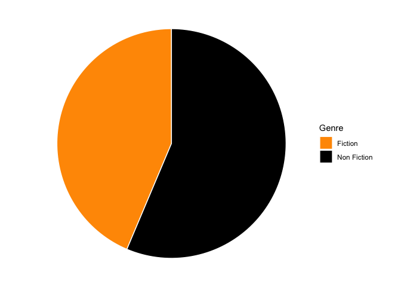
Genres through the years
Bestsellers distribution by genre by year
bestsellers %>%
group_by(Year, Genre) %>%
summarise(sum = n()) %>%
ggplot(aes(
x = Year,
y = sum,
fill = Genre
)) +
geom_col() +
theme_minimal() +
scale_x_continuous(breaks = seq(2009, 2019, by = 1)) +
scale_fill_manual(values = c("#ff9900", "#000000")) +
theme(
panel.grid.major.x = element_blank(),
panel.grid.minor = element_blank(),
axis.title.y = element_blank(),
legend.title = element_blank(),
axis.title.x = element_blank()
)## `summarise()` has grouped output by 'Year'. You can override using the
## `.groups` argument.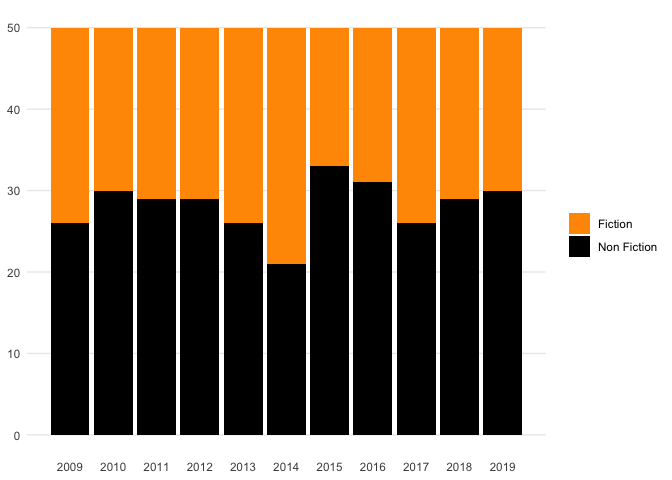
Correlation Analysis
Is there any correlation seen between the different numerical variables?
bestsellers %>%
select(User.Rating, Reviews, Price, Year) %>%
cor() %>%
corrplot::corrplot(
type = "lower",
order = "hclust",
method = "color",
addgrid.col = "darkgray",
outline = T,
tl.cex = 1,
tl.col = "black",
col = brewer.pal(n = 6, name = "RdGy")
)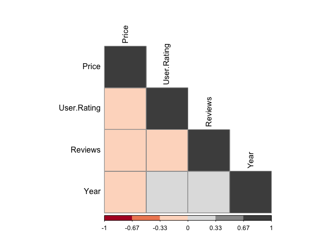
User Reviews vs Year
Most reviewed books
bestsellers %>%
select(Name, Reviews) %>%
arrange(desc(Reviews)) %>%
head(20) %>%
distinct()## Name
## 1 Where the Crawdads Sing
## 2 The Girl on the Train
## 3 Becoming
## 4 Gone Girl
## 5 The Fault in Our Stars
## 6 The Nightingale: A Novel
## 7 Fifty Shades of Grey: Book One of the Fifty Shades Trilogy (Fifty Shades of Grey Series)
## 8 The Martian
## 9 All the Light We Cannot See
## 10 The Alchemist
## Reviews
## 1 87841
## 2 79446
## 3 61133
## 4 57271
## 5 50482
## 6 49288
## 7 47265
## 8 39459
## 9 36348
## 10 35799Are the number of reviews changing by year?
Linear Model
bestsellers %>%
lm(formula = Year ~ Reviews) %>%
summary()##
## Call:
## lm(formula = Year ~ Reviews, data = .)
##
## Residuals:
## Min 1Q Median 3Q Max
## -5.5523 -2.5991 -0.3255 2.5354 5.6549
##
## Coefficients:
## Estimate Std. Error t value Pr(>|t|)
## (Intercept) 2.013e+03 1.861e-01 10816.121 < 2e-16 ***
## Reviews 7.111e-05 1.112e-05 6.396 3.42e-10 ***
## ---
## Signif. codes: 0 '***' 0.001 '**' 0.01 '*' 0.05 '.' 0.1 ' ' 1
##
## Residual standard error: 3.056 on 548 degrees of freedom
## Multiple R-squared: 0.06946, Adjusted R-squared: 0.06777
## F-statistic: 40.91 on 1 and 548 DF, p-value: 3.423e-10Data Viz
bestsellers %>%
ggplot(aes(Year, Reviews, color = Genre))+
geom_jitter()+
geom_smooth(method = 'lm', formula = y ~ x )+
theme_minimal() +
scale_color_manual(values = c("#ff9900", "#000000")) +
scale_x_continuous(breaks = seq(2009, 2019, by = 1))+
theme(
panel.grid.minor = element_blank(),
legend.title = element_blank(),
axis.title.x = element_blank()
)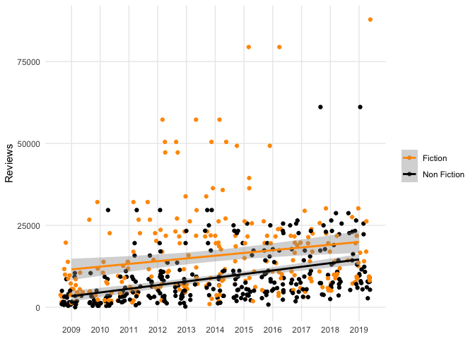
Reviews Distribution
bestsellers %>%
ggplot(aes(Reviews, ..density..)) +
geom_histogram(fill = "#ff9900", color = 'black',binwidth = 1000) +
geom_density(alpha = 0.5, fill = "#ff9900") +
theme_minimal() +
theme(
panel.grid.major = element_blank())
User Ratings vs Year
Highest Rated Books
bestsellers %>%
select(Name, User.Rating) %>%
arrange(desc(User.Rating)) %>%
head(20) %>%
distinct()## Name
## 1 Brown Bear, Brown Bear, What Do You See?
## 2 Dog Man and Cat Kid: From the Creator of Captain Underpants (Dog Man #4)
## 3 Dog Man: A Tale of Two Kitties: From the Creator of Captain Underpants (Dog Man #3)
## 4 Dog Man: Brawl of the Wild: From the Creator of Captain Underpants (Dog Man #6)
## 5 Dog Man: Fetch-22: From the Creator of Captain Underpants (Dog Man #8)
## 6 Dog Man: For Whom the Ball Rolls: From the Creator of Captain Underpants (Dog Man #7)
## 7 Dog Man: Lord of the Fleas: From the Creator of Captain Underpants (Dog Man #5)
## 8 Goodnight, Goodnight Construction Site (Hardcover Books for Toddlers, Preschool Books for Kids)
## 9 Hamilton: The Revolution
## 10 Harry Potter and the Chamber of Secrets: The Illustrated Edition (Harry Potter, Book 2)
## 11 Harry Potter and the Goblet of Fire: The Illustrated Edition (Harry Potter, Book 4) (4)
## 12 Harry Potter and the Prisoner of Azkaban: The Illustrated Edition (Harry Potter, Book 3)
## 13 Harry Potter and the Sorcerer's Stone: The Illustrated Edition (Harry Potter, Book 1)
## 14 Humans of New York : Stories
## 15 Jesus Calling: Enjoying Peace in His Presence (with Scripture References)
## User.Rating
## 1 4.9
## 2 4.9
## 3 4.9
## 4 4.9
## 5 4.9
## 6 4.9
## 7 4.9
## 8 4.9
## 9 4.9
## 10 4.9
## 11 4.9
## 12 4.9
## 13 4.9
## 14 4.9
## 15 4.9Are users rating the bestsellers differently by year?
Linear Model
bestsellers %>%
lm(formula = Year ~ Reviews) %>%
summary()##
## Call:
## lm(formula = Year ~ Reviews, data = .)
##
## Residuals:
## Min 1Q Median 3Q Max
## -5.5523 -2.5991 -0.3255 2.5354 5.6549
##
## Coefficients:
## Estimate Std. Error t value Pr(>|t|)
## (Intercept) 2.013e+03 1.861e-01 10816.121 < 2e-16 ***
## Reviews 7.111e-05 1.112e-05 6.396 3.42e-10 ***
## ---
## Signif. codes: 0 '***' 0.001 '**' 0.01 '*' 0.05 '.' 0.1 ' ' 1
##
## Residual standard error: 3.056 on 548 degrees of freedom
## Multiple R-squared: 0.06946, Adjusted R-squared: 0.06777
## F-statistic: 40.91 on 1 and 548 DF, p-value: 3.423e-10Data Viz
bestsellers %>%
ggplot(aes(Year, User.Rating, color = Genre))+
geom_jitter()+
geom_smooth(method = 'lm', formula = y ~ x )+
theme_minimal() +
scale_color_manual(values = c("#ff9900", "#000000")) +
scale_x_continuous(breaks = seq(2009, 2019, by = 1))+
theme(
panel.grid.minor = element_blank(),
legend.title = element_blank(),
axis.title.x = element_blank()
)
Ratings Distribution
bestsellers %>%
ggplot(aes(User.Rating, ..density..)) +
geom_histogram(fill = "#ff9900",
color = 'black',
binwidth = 0.1) +
geom_density(alpha = 0.5, fill = "#ff9900") +
theme_minimal() +
theme(panel.grid.major = element_blank())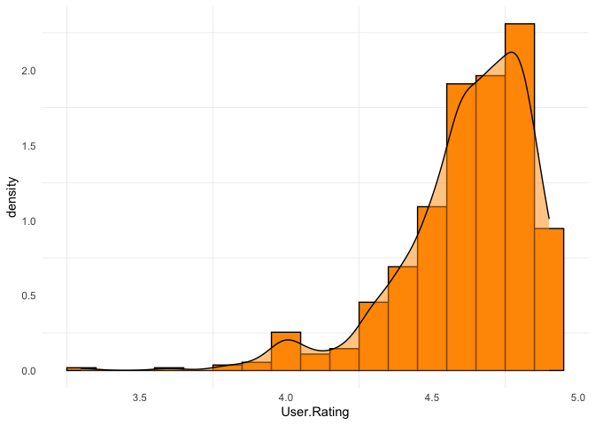
Ratings vs Reviews
ggplot(bestsellers) +
aes(
x = Reviews,
y = User.Rating,
colour = Genre,
size = Reviews
) +
geom_jitter(alpha = 0.45) +
scale_color_manual(
values = c(Fiction = "#ff9900",
`Non Fiction` = "#000000")
) +
theme_minimal()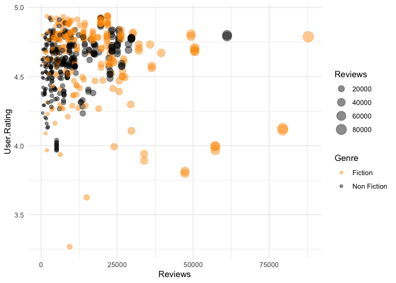
Price
Is there a substantial change in price over the years?
Linear Model
bestsellers %>%
lm(formula = Year ~ Price) %>%
summary()##
## Call:
## lm(formula = Year ~ Price, data = .)
##
## Residuals:
## Min 1Q Median 3Q Max
## -5.5439 -2.6449 -0.0944 2.7708 5.6248
##
## Coefficients:
## Estimate Std. Error t value Pr(>|t|)
## (Intercept) 2014.58885 0.20945 9618.334 < 2e-16 ***
## Price -0.04495 0.01232 -3.648 0.000289 ***
## ---
## Signif. codes: 0 '***' 0.001 '**' 0.01 '*' 0.05 '.' 0.1 ' ' 1
##
## Residual standard error: 3.13 on 548 degrees of freedom
## Multiple R-squared: 0.02371, Adjusted R-squared: 0.02193
## F-statistic: 13.31 on 1 and 548 DF, p-value: 0.0002895bestsellers %>%
ggplot(aes(Year, Price, color = Genre))+
geom_jitter()+
geom_smooth(method = 'lm', formula = y ~ x )+
theme_minimal() +
scale_color_manual(values = c("#ff9900", "#000000")) +
scale_x_continuous(breaks = seq(2009, 2019, by = 1))+
theme(
panel.grid.minor = element_blank(),
legend.title = element_blank(),
axis.title.x = element_blank()
)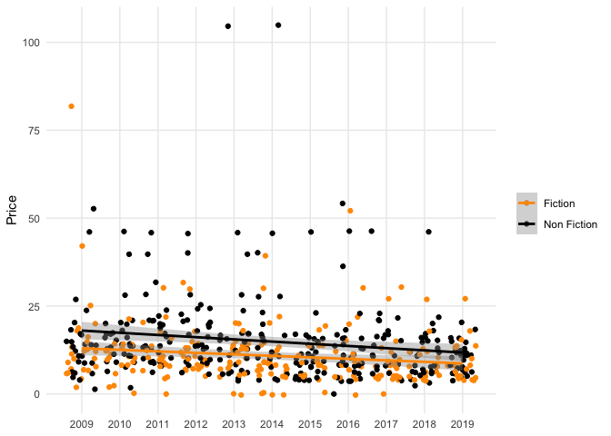
Price Distribution
bestsellers %>%
ggplot(aes(Price, ..density..)) +
geom_histogram(fill = "#ff9900",
color = 'black',
binwidth = 1.3) +
geom_density(alpha = 0.5, fill = "#ff9900") +
theme_minimal() +
theme(panel.grid.major = element_blank())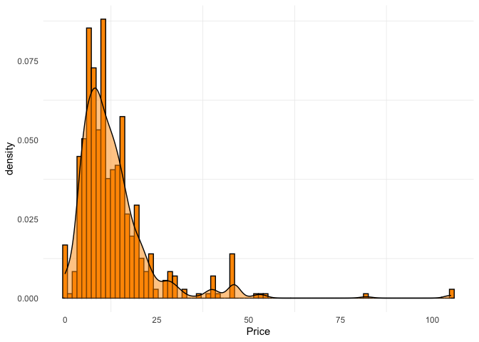
Most Expensive Books
bestsellers %>%
select(Name, Price) %>%
arrange(desc(Price)) %>%
head(20) %>%
distinct() %>%
ggplot(aes(x =reorder(Name, Price), y = Price,
fill = ifelse(Price == max(Price), "red","grey"))) +
geom_col() +
coord_flip() +
scale_fill_manual(values = c("#000000", "#ff9900")) +
theme_minimal() +
theme(
panel.grid.minor = element_blank(),
panel.grid.major.y = element_blank(),
legend.position = "none",
axis.title.y = element_blank()
)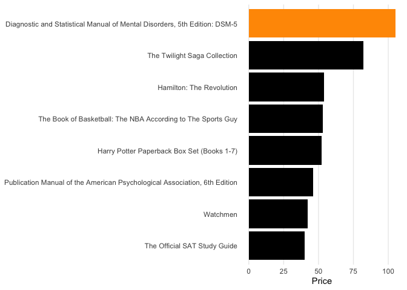
Most Instances on the best seller list
bestsellers %>%
group_by(Author) %>%
summarise(count = n()) %>%
arrange(desc(count)) %>%
head(10) %>%
ggplot(aes(x =reorder(Author, count), y = count,
fill = ifelse(count == max(count), "red","grey"))) +
scale_y_continuous(breaks = seq(0, 13, by = 1))+
geom_col() +
coord_flip() +
scale_fill_manual(values = c("#000000", "#ff9900")) +
theme_minimal() +
theme(
panel.grid.minor = element_blank(),
panel.grid.major.y = element_blank(),
legend.position = "none",
axis.title.y = element_blank()
)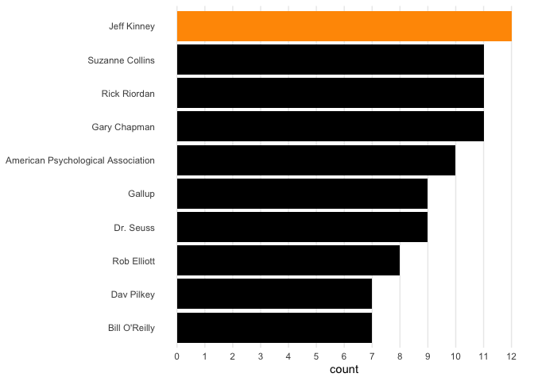
What were their books?
bestsellers %>%
filter(Author=="Jeff Kinney")## Name Author User.Rating
## 1 Cabin Fever (Diary of a Wimpy Kid, Book 6) Jeff Kinney 4.8
## 2 Diary of a Wimpy Kid: Hard Luck, Book 8 Jeff Kinney 4.8
## 3 Diary of a Wimpy Kid: The Last Straw (Book 3) Jeff Kinney 4.8
## 4 Diary of a Wimpy Kid: The Long Haul Jeff Kinney 4.8
## 5 Dog Days (Diary of a Wimpy Kid, Book 4) (Volume 4) Jeff Kinney 4.8
## 6 Double Down (Diary of a Wimpy Kid #11) Jeff Kinney 4.8
## 7 Old School (Diary of a Wimpy Kid #10) Jeff Kinney 4.8
## 8 The Getaway Jeff Kinney 4.8
## 9 The Meltdown (Diary of a Wimpy Kid Book 13) Jeff Kinney 4.8
## 10 The Third Wheel (Diary of a Wimpy Kid, Book 7) Jeff Kinney 4.7
## 11 The Ugly Truth (Diary of a Wimpy Kid, Book 5) Jeff Kinney 4.8
## 12 Wrecking Ball (Diary of a Wimpy Kid Book 14) Jeff Kinney 4.9
## Reviews Price Year Genre
## 1 4505 0 2011 Fiction
## 2 6812 0 2013 Fiction
## 3 3837 15 2009 Fiction
## 4 6540 22 2014 Fiction
## 5 3181 12 2009 Fiction
## 6 5118 20 2016 Fiction
## 7 6169 7 2015 Fiction
## 8 5836 0 2017 Fiction
## 9 5898 8 2018 Fiction
## 10 6377 7 2012 Fiction
## 11 3796 12 2010 Fiction
## 12 9413 8 2019 FictionBooks
Most instances on the best sellers list
bestsellers %>%
group_by(Name) %>%
summarise(count = n()) %>%
arrange(desc(count)) %>%
head(10) %>%
ggplot(aes(x =reorder(Name, count), y = count,
fill = ifelse(count == max(count), "red","grey"))) +
scale_y_continuous(breaks = seq(0, 13, by = 1))+
geom_col() +
coord_flip() +
scale_fill_manual(values = c("#000000", "#ff9900")) +
theme_minimal() +
theme(
panel.grid.minor = element_blank(),
panel.grid.major.y = element_blank(),
legend.position = "none",
axis.title.y = element_blank()
)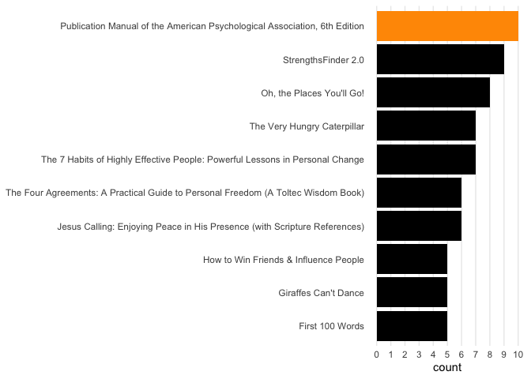
K - Means Clustering
data_kmeans <- bestsellers[3:6]
data_kmeans <- data_kmeans %>%
slice(1:20)library(factoextra)## Welcome! Want to learn more? See two factoextra-related books at https://goo.gl/ve3WBadata_kmeans <- bestsellers[3:6]
data_kmeans <- data_kmeans %>%
slice(1:20)
data_kmeans_scaled <- scale(data_kmeans)
data_kmeans <- dist(data_kmeans_scaled)
fviz_nbclust(data_kmeans_scaled, kmeans,
method = "wss") + # wss means within sum squares
labs(subtitle = "Elbow Method")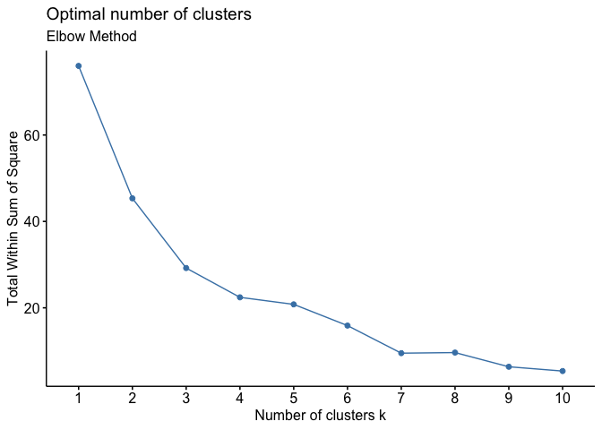
kmeans_output <- kmeans(data_kmeans_scaled, centers = 3, nstart = 100)
kmeans_output.clusters <- kmeans_output$clusterbestsellers_mini <- bestsellers %>%
slice(1:20)rownames(data_kmeans_scaled) <- paste(bestsellers_mini$Name, 1:dim(bestsellers_mini)[1], sep="_")fviz_cluster(list(data = data_kmeans_scaled, cluster = kmeans_output.clusters)) +
theme_minimal() +
theme(plot.subtitle = element_text(size = 12,
face = "italic"),
plot.caption = element_text(size = 9),
plot.title = element_text(size = 15,
face = "bold")
) + labs(
colour = "Cluster",
fill = "Cluster",
shape = "Cluster",
)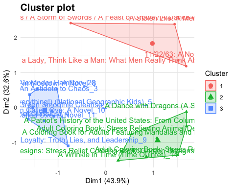
test <- table(kmeans_output.clusters, bestsellers_mini$Name)
as.data.frame(test)## kmeans_output.clusters
## 1 1
## 2 2
## 3 3
## 4 1
## 5 2
## 6 3
## 7 1
## 8 2
## 9 3
## 10 1
## 11 2
## 12 3
## 13 1
## 14 2
## 15 3
## 16 1
## 17 2
## 18 3
## 19 1
## 20 2
## 21 3
## 22 1
## 23 2
## 24 3
## 25 1
## 26 2
## 27 3
## 28 1
## 29 2
## 30 3
## 31 1
## 32 2
## 33 3
## 34 1
## 35 2
## 36 3
## 37 1
## 38 2
## 39 3
## 40 1
## 41 2
## 42 3
## 43 1
## 44 2
## 45 3
## 46 1
## 47 2
## 48 3
## 49 1
## 50 2
## 51 3
## 52 1
## 53 2
## 54 3
## 55 1
## 56 2
## 57 3
## Var2
## 1 10-Day Green Smoothie Cleanse
## 2 10-Day Green Smoothie Cleanse
## 3 10-Day Green Smoothie Cleanse
## 4 11/22/63: A Novel
## 5 11/22/63: A Novel
## 6 11/22/63: A Novel
## 7 12 Rules for Life: An Antidote to Chaos
## 8 12 Rules for Life: An Antidote to Chaos
## 9 12 Rules for Life: An Antidote to Chaos
## 10 1984 (Signet Classics)
## 11 1984 (Signet Classics)
## 12 1984 (Signet Classics)
## 13 5,000 Awesome Facts (About Everything!) (National Geographic Kids)
## 14 5,000 Awesome Facts (About Everything!) (National Geographic Kids)
## 15 5,000 Awesome Facts (About Everything!) (National Geographic Kids)
## 16 A Dance with Dragons (A Song of Ice and Fire)
## 17 A Dance with Dragons (A Song of Ice and Fire)
## 18 A Dance with Dragons (A Song of Ice and Fire)
## 19 A Game of Thrones / A Clash of Kings / A Storm of Swords / A Feast of Crows / A Dance with Dragons
## 20 A Game of Thrones / A Clash of Kings / A Storm of Swords / A Feast of Crows / A Dance with Dragons
## 21 A Game of Thrones / A Clash of Kings / A Storm of Swords / A Feast of Crows / A Dance with Dragons
## 22 A Gentleman in Moscow: A Novel
## 23 A Gentleman in Moscow: A Novel
## 24 A Gentleman in Moscow: A Novel
## 25 A Higher Loyalty: Truth, Lies, and Leadership
## 26 A Higher Loyalty: Truth, Lies, and Leadership
## 27 A Higher Loyalty: Truth, Lies, and Leadership
## 28 A Man Called Ove: A Novel
## 29 A Man Called Ove: A Novel
## 30 A Man Called Ove: A Novel
## 31 A Patriot's History of the United States: From Columbus's Great Discovery to the War on Terror
## 32 A Patriot's History of the United States: From Columbus's Great Discovery to the War on Terror
## 33 A Patriot's History of the United States: From Columbus's Great Discovery to the War on Terror
## 34 A Stolen Life: A Memoir
## 35 A Stolen Life: A Memoir
## 36 A Stolen Life: A Memoir
## 37 A Wrinkle in Time (Time Quintet)
## 38 A Wrinkle in Time (Time Quintet)
## 39 A Wrinkle in Time (Time Quintet)
## 40 Act Like a Lady, Think Like a Man: What Men Really Think About Love, Relationships, Intimacy, and Commitment
## 41 Act Like a Lady, Think Like a Man: What Men Really Think About Love, Relationships, Intimacy, and Commitment
## 42 Act Like a Lady, Think Like a Man: What Men Really Think About Love, Relationships, Intimacy, and Commitment
## 43 Adult Coloring Book Designs: Stress Relief Coloring Book: Garden Designs, Mandalas, Animals, and Paisley Patterns
## 44 Adult Coloring Book Designs: Stress Relief Coloring Book: Garden Designs, Mandalas, Animals, and Paisley Patterns
## 45 Adult Coloring Book Designs: Stress Relief Coloring Book: Garden Designs, Mandalas, Animals, and Paisley Patterns
## 46 Adult Coloring Book: Stress Relieving Animal Designs
## 47 Adult Coloring Book: Stress Relieving Animal Designs
## 48 Adult Coloring Book: Stress Relieving Animal Designs
## 49 Adult Coloring Book: Stress Relieving Patterns
## 50 Adult Coloring Book: Stress Relieving Patterns
## 51 Adult Coloring Book: Stress Relieving Patterns
## 52 Adult Coloring Books: A Coloring Book for Adults Featuring Mandalas and Henna Inspired Flowers, Animals, and Paisley…
## 53 Adult Coloring Books: A Coloring Book for Adults Featuring Mandalas and Henna Inspired Flowers, Animals, and Paisley…
## 54 Adult Coloring Books: A Coloring Book for Adults Featuring Mandalas and Henna Inspired Flowers, Animals, and Paisley…
## 55 Alexander Hamilton
## 56 Alexander Hamilton
## 57 Alexander Hamilton
## Freq
## 1 0
## 2 0
## 3 1
## 4 1
## 5 0
## 6 0
## 7 0
## 8 0
## 9 1
## 10 0
## 11 0
## 12 1
## 13 0
## 14 0
## 15 1
## 16 0
## 17 1
## 18 0
## 19 1
## 20 0
## 21 0
## 22 0
## 23 0
## 24 1
## 25 0
## 26 0
## 27 1
## 28 0
## 29 0
## 30 2
## 31 0
## 32 1
## 33 0
## 34 1
## 35 0
## 36 0
## 37 0
## 38 1
## 39 0
## 40 1
## 41 0
## 42 0
## 43 0
## 44 1
## 45 0
## 46 0
## 47 1
## 48 0
## 49 0
## 50 1
## 51 0
## 52 0
## 53 1
## 54 0
## 55 0
## 56 0
## 57 1Hierarchical clustering
res <- hcut(data_kmeans_scaled, k = 4, stand = TRUE)
# Visualize
fviz_dend(res, rect = TRUE, cex = 0.3,
k_colors = c("#00AFBB","#2E9FDF", "#E7B800", "#FC4E07")) +
theme_minimal()## Warning: `guides(<scale> = FALSE)` is deprecated. Please use `guides(<scale> =
## "none")` instead.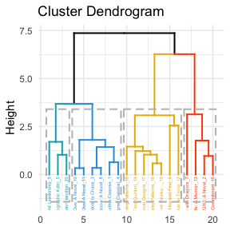
Reuse
Citation
BibTeX citation:
@online{sidhu2022,
author = {Karat Sidhu},
editor = {},
title = {Amazon {Bestsellers} {Data} {Analysis}},
date = {2022-04-26},
url = {https://karatsidhu.com/posts/amazon-bestsellers-data-analysis/amazon-bestsellers-data-analysis.html},
langid = {en}
}
For attribution, please cite this work as:
Karat Sidhu. 2022. “Amazon Bestsellers Data Analysis.”
April 26, 2022. https://karatsidhu.com/posts/amazon-bestsellers-data-analysis/amazon-bestsellers-data-analysis.html.